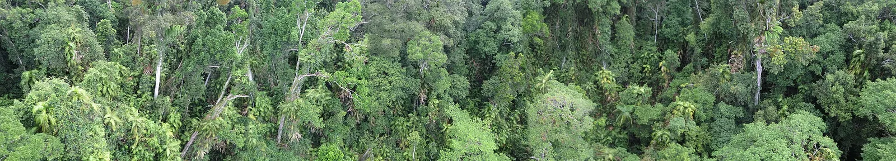
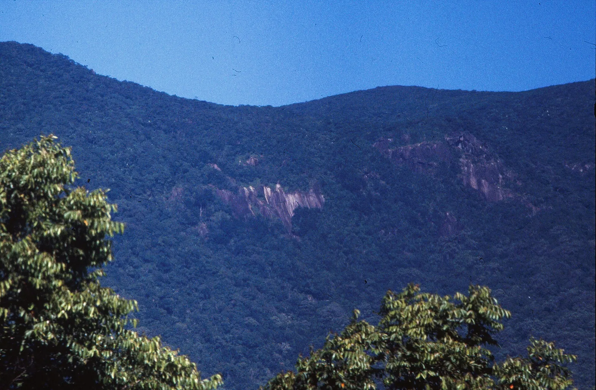
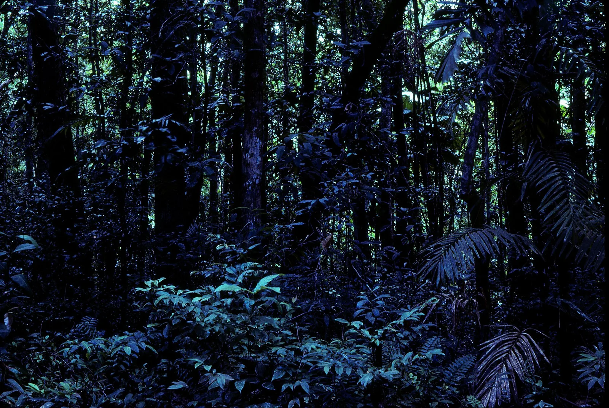

S14 · Sur
S14 · Süden
S14 · South
Selva de Daintree
Conocí la selva de Daintree, más antigua que el Amazonas, que ya era selva cuando caminaban los dinosaurios.
Ich lernte den Daintree-Regenwald kennen, älter als der Amazonas, der schon Wald war, als die Dinosaurier gingen.
I came to know the Daintree rainforest, older than the Amazon, already a forest when the dinosaurs walked.
Información
Los Trópicos Húmedos de Queensland se extienden unos 450 kilómetros por la costa noreste de Australia y cubren 894.420 hectáreas, casi todas de selva tropical.
Conservan un registro sin paralelo de los procesos que dieron forma a la flora y la fauna australianas: son los restos del gran bosque de Gondwana que cubrió Australia y parte de la Antártida hace entre 50 y 100 millones de años.
Ahí están representados todos los marsupiales propios de Australia y la mayor parte de sus aves cantoras, junto a otras especies raras o amenazadas.
Information
Los Trópicos Húmedos de Queensland se extienden unos 450 kilómetros por la costa noreste de Australia y cubren 894.420 hectáreas, casi todas de selva tropical.
Conservan un registro sin paralelo de los procesos que dieron forma a la flora y la fauna australianas: son los restos del gran bosque de Gondwana que cubrió Australia y parte de la Antártida hace entre 50 y 100 millones de años.
Ahí están representados todos los marsupiales propios de Australia y la mayor parte de sus aves cantoras, junto a otras especies raras o amenazadas.
Information
Los Trópicos Húmedos de Queensland se extienden unos 450 kilómetros por la costa noreste de Australia y cubren 894.420 hectáreas, casi todas de selva tropical.
Conservan un registro sin paralelo de los procesos que dieron forma a la flora y la fauna australianas: son los restos del gran bosque de Gondwana que cubrió Australia y parte de la Antártida hace entre 50 y 100 millones de años.
Ahí están representados todos los marsupiales propios de Australia y la mayor parte de sus aves cantoras, junto a otras especies raras o amenazadas.
La UICN evalúa los Trópicos Húmedos de Queensland como de «preocupación significativa». El sitio tiene un marco legal sólido, una autoridad de manejo propia con amplio apoyo de la comunidad y un conjunto completo de estrategias.
Aun así, la amenaza insidiosa de las plantas, los animales y las enfermedades invasoras, sumada a los impactos del cambio climático, representa un peligro real para la integridad de su biodiversidad y de las especies endémicas que sólo viven ahí.
La UICN evalúa los Trópicos Húmedos de Queensland como de «preocupación significativa». El sitio tiene un marco legal sólido, una autoridad de manejo propia con amplio apoyo de la comunidad y un conjunto completo de estrategias.
Aun así, la amenaza insidiosa de las plantas, los animales y las enfermedades invasoras, sumada a los impactos del cambio climático, representa un peligro real para la integridad de su biodiversidad y de las especies endémicas que sólo viven ahí.
La UICN evalúa los Trópicos Húmedos de Queensland como de «preocupación significativa». El sitio tiene un marco legal sólido, una autoridad de manejo propia con amplio apoyo de la comunidad y un conjunto completo de estrategias.
Aun así, la amenaza insidiosa de las plantas, los animales y las enfermedades invasoras, sumada a los impactos del cambio climático, representa un peligro real para la integridad de su biodiversidad y de las especies endémicas que sólo viven ahí.
Fuentes
Quellen
Sources
- UICN, Perspectiva del Patrimonio Mundial (evaluación 2025), Wet Tropics of Queensland — https://worldheritageoutlook.iucn.org/explore-sites/wet-tropics-queensland
Galería
Galerie
Gallery



Fuentes
Quellen
Sources
- UNESCO, Centro del Patrimonio Mundial, Wet Tropics of Queensland — https://whc.unesco.org/en/list/486/ consultado 2026-10-05abgerufen 2026-10-05accessed 2026-10-05